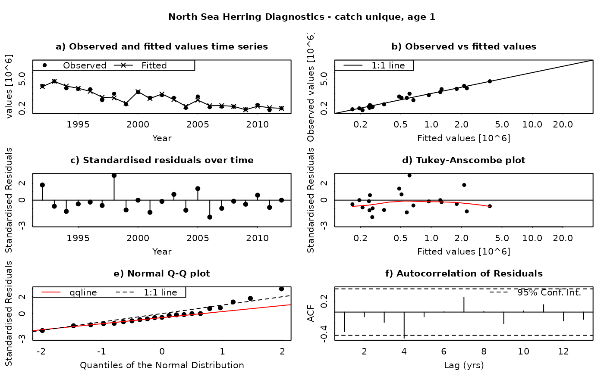
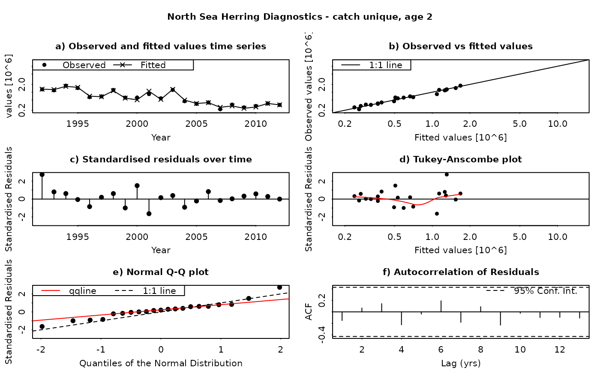
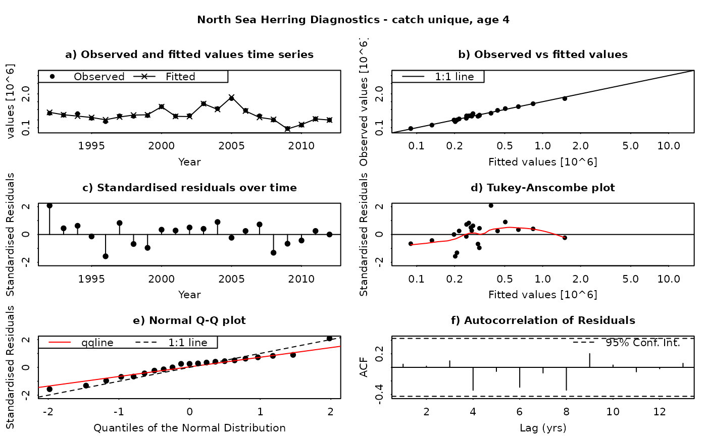
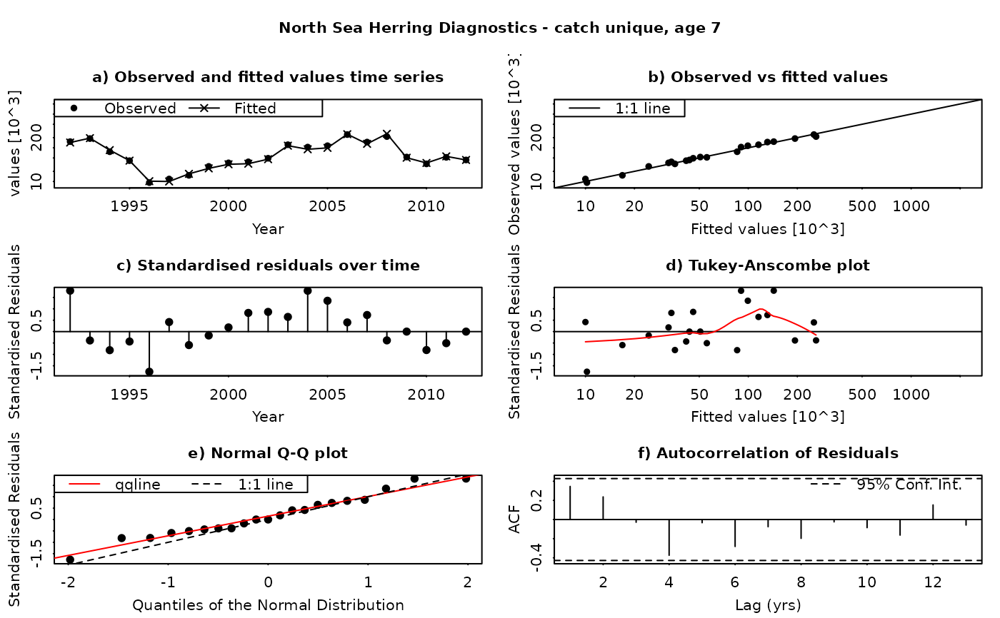
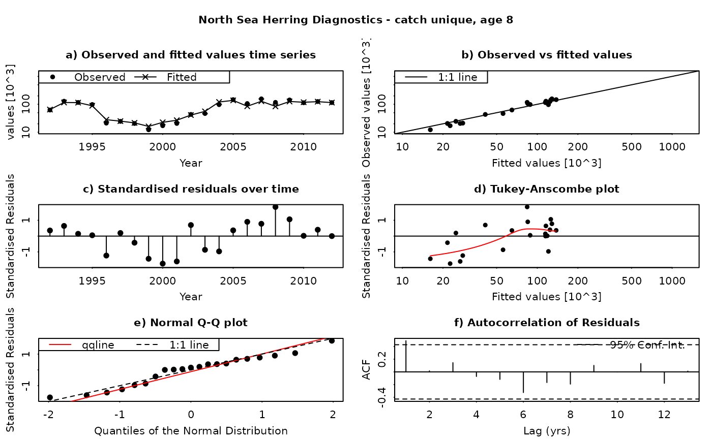
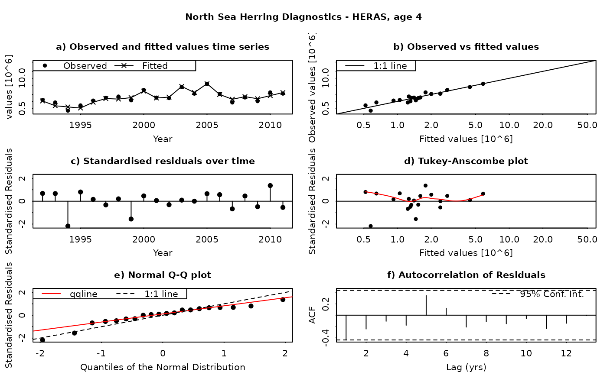
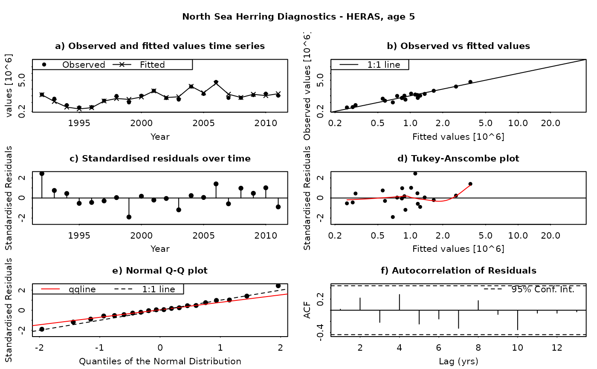
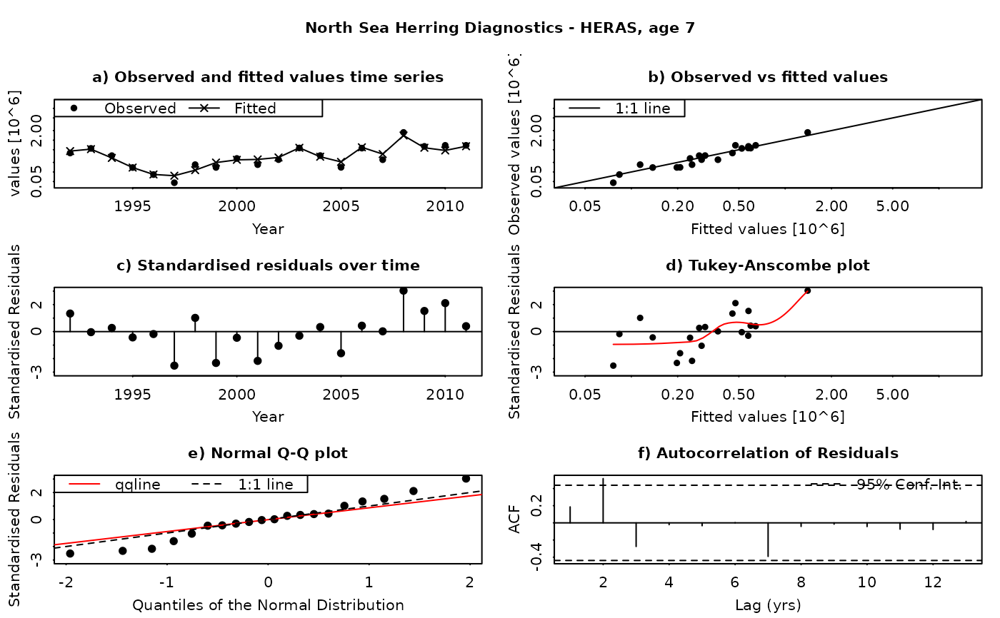
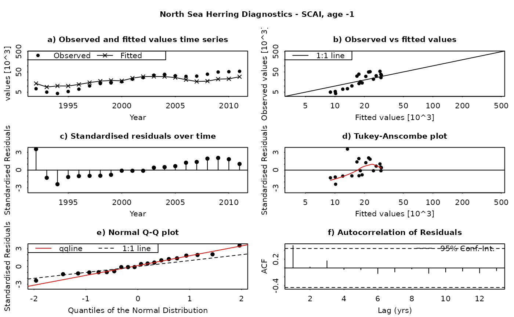

Generate a set of assessment diagnostics from an FLSAM object.
residual.diagnostics(x,title=x@name)
Arguments
- x
- An
FLSAMobject resulting from a stock assessment. - title
- A text string to be displayed as part of the plot titles. Defaults to the name of the
FLSAMobject.
Details
The SAM model assumes that the residuals between the observed and fitted values are log-normally distributed, and independently and identically distributed (i.i.d.). This function produces a set of diagnostic plots allowing these assumptions to be validated, in much the same way as they would be done in a linear modelling situation. The function produces a set of plots (six in all) for each individual combination of age and fleet (including both catches and surveys). The six panels produced are
- Time series of fitted and observed values. A direct comparison of the individual time series - fitted values are linked by a line, while observations are plotted as points. In an ideal fit, the observations should closely agree with the fitted values.
- Observed vs fitted values. The fitted values are plotted on the horizontal axis and the obseved values on the vertical axis. A 1:1 line, indicating a perfect fit between the two, is also plotted for reference. In an ideal fit, the points will be distributed tightly around the 1:1 line, with no or few outliers.
- Residuals over time. The residuals are plotted as a time series, with a line connecting the point to the zero line. In an ideal fit, the points should be distributed randomly about the zero line, with no systematic patterns.
- Tukey-Anscombe plot. Residuals are plotted as a function of the fitted values. A loess smoother (red line) is also plotted. In an ideal fit, the residuals should be evenly distributed about zero with constant mean and variance - the red smoother line can aid in detecting systematic changes in the residuals.
- Normal QQ-Plot. The residuals are plotted against the corresponding quantiles of the normal distribution. A 1:1 line is plotted together with the qqline (passing through the first and third quantiles - see help for qqline()). In an ideal fit, the qqplot will show a straight line, especially in the tails, indicating that the residuals are normally distributed.
- Autocorrelation plot. Plots the autocorrelation between residuals as a function of the lag, with confidence intervals for the significance of the correlation. In an ideal fit, the autocorrelations should be non-significant, particularly at the shortest time lags.
Residuals in SAM are standardised log-residuals (also known as studentized residuals). They are defined as the residual (log (observed value) - log(fitted value)) divided by the standard deviation of the observations (the observation error).
Both observed and fitted values are plotted on a logarithmic scale - FLSAM fits all observations as being log-transformed (i.e. a log-normal error structure) and therefore plotting on a logarithmic scale is the most appropriate. Furthermore, the top four plots are laid-out so that all scales are the same, and that individual points can be traced between the plots by moving horizontally or vertically as appropriate.
All plots are plotted sequentially and immediately, one after the other. If this is a problem (e.g. for plotting immediately to a window), a pause can be inserted between each page using par(ask=TRUE) - see the examples.
Value
None.
See also
qqplot and qqline for information on QQ-plots. plot.acf and acf for information on the autocorrelation function plot
Examples
#Load data library(FLSAM) data(NSH.sam) #Plot each page with a pause between par(ask=TRUE) #Generate plots residual.diagnostics(NSH.sam)



